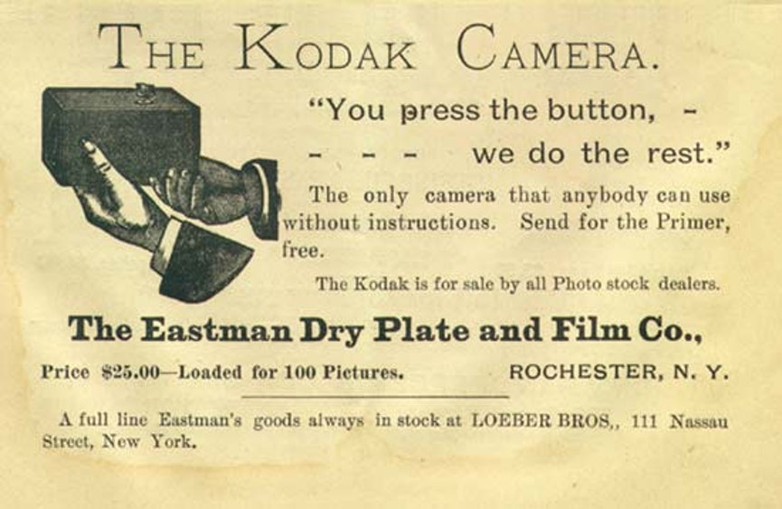
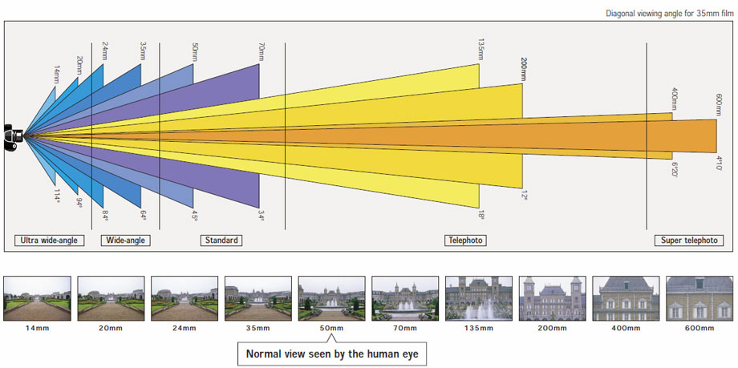
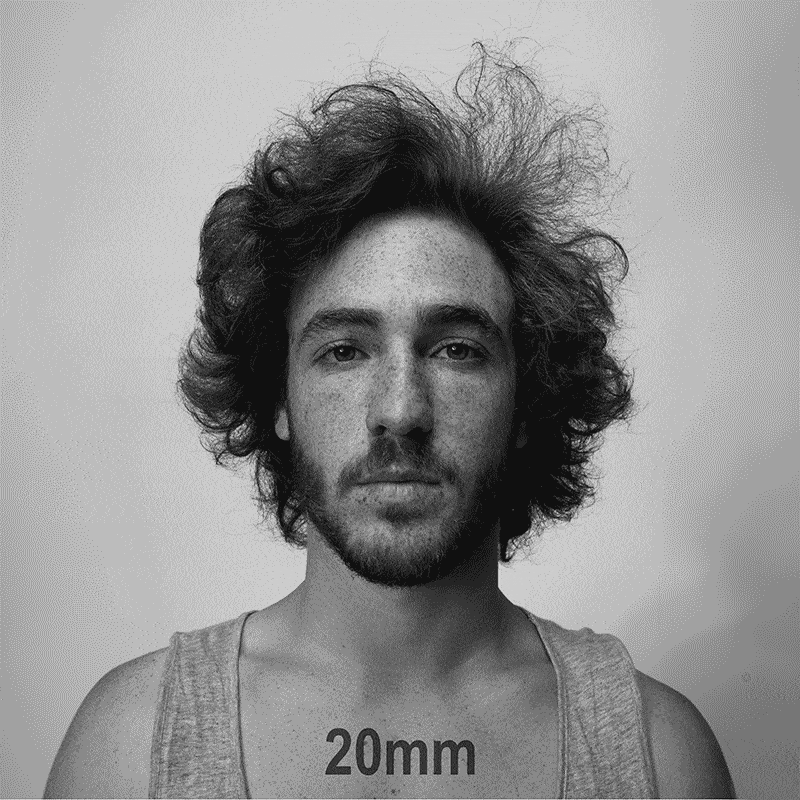
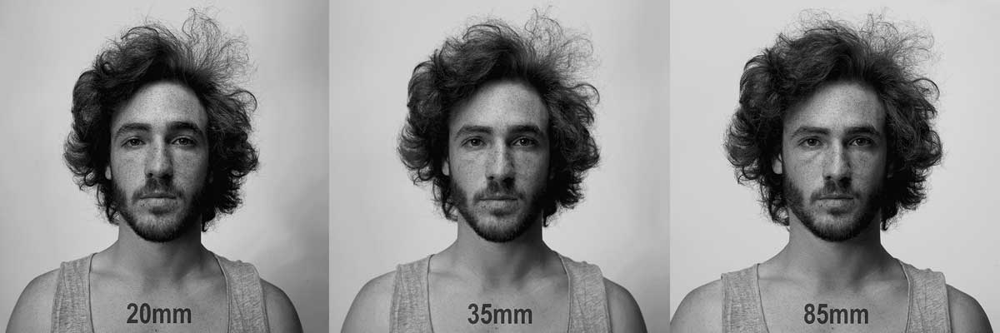
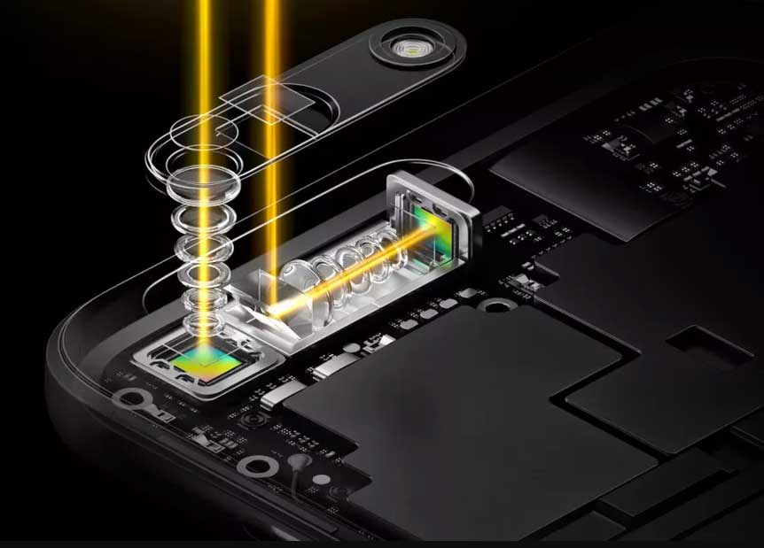

Advertisement for Kodak camera 1888. George Eastman, 1888.
3. Analog vs. DSLR vs. Mobile Photography
Analog: dependent on the physics of lenses, light, and light-sensitive surfaces.
DSLR: dependent on the physics of lenses, light, and sensors.
Mobile: dependent on sensor and software (and lenses?).



Mobile phones: around 32mm (front camera) and approximately 50mm (back camera) | but it changes depending on the manufacturer. Note: Lenses on mobile devices have less length but are calculated based on a 35mm full-frame sensor.

Periscope lense
Let's see some Tips and tricks for taking pictures with mobile devices